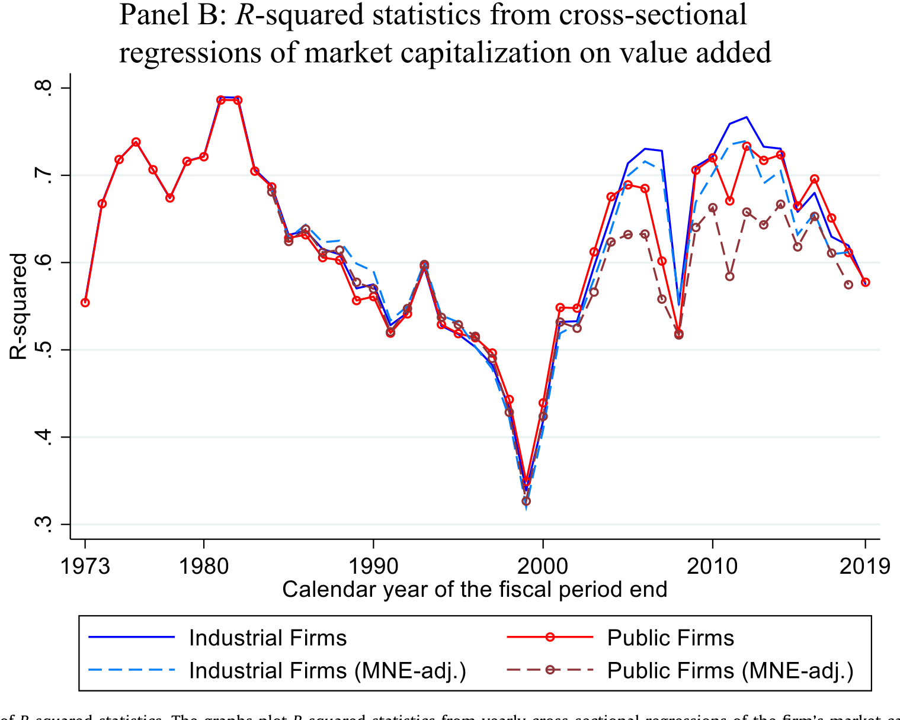
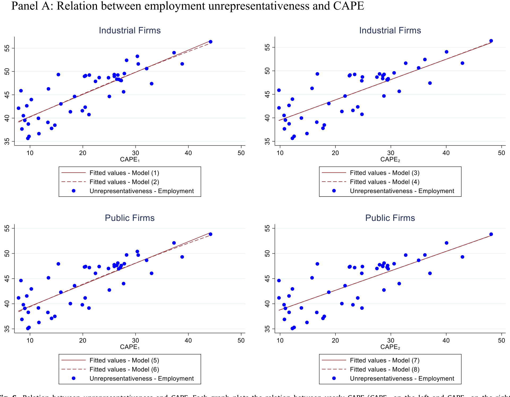
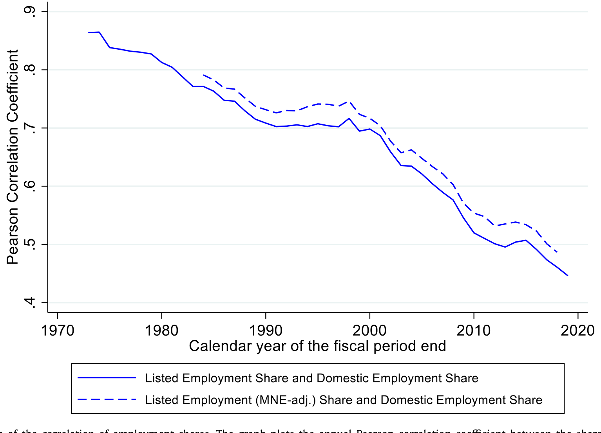
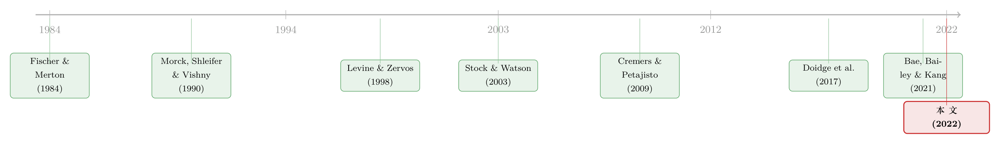

当失业率与纳斯达克背道而驰：股市还能代表经济吗？
本文读的是 Schlingemann & Stulz (2022, Journal of Financial Economics)：从 1973 到 2019，美国上市公司对就业与 GDP 的直接贡献一路下滑——上市公司全球雇员占非农就业的比例从 41.43% 跌到 29.06%；更要紧的是，一家公司的市值，如今已经远不如四十年前那样能告诉你它到底雇了多少人。换句话说，股市这面镜子，照经济的清晰度变了。
1 引言：2020 年夏天那道刺眼的裂缝
2020 年的夏天，美国经济正被新冠疫情按在地上摩擦。失业率冲到了自 1948 年以来的最高位——上一次这么惨，还要追溯到二战刚结束、整个统计体系才刚刚建立的年代。可与此同时，纳斯达克和标普 500 却双双刷出了历史新高。
一边是排着长队领失业救济的普通人，一边是屡创新高的股指。这两条曲线如此刺眼地背道而驰，逼出了一个让政策制定者、媒体、乃至我们这些搞金融的人都无法回避的问题：股票市场，到底还能在多大程度上反映经济的健康？
这并不是一个新问题。早在 1953 年，通用汽车（GM）的总裁 Charles Wilson 在国会作证时就留下过一句名言——「多年来我一直认为，对国家有利的事，就对通用汽车有利，反之亦然。两者之间没有区别。」那一年，通用是全美市值最高的公司。问题是：当年那家「市值之王」对经济的代表性，会不会本来就比今天的「市值之王」要高得多？
Schlingemann 和 Stulz 这篇论文，正是要把这句感慨变成可以测量的东西。他们问的是一个非常具体的问题：一家上市公司的市值，在多大程度上反映了它「当期」对经济的贡献——对就业、对 GDP？而这种「反映程度」，又是如何随时间演变的？
2 一个公司的市值，到底在说什么？
要回答这个问题，得先想清楚一件容易被忽略的事：市值，本来就不是为「当期经济贡献」而生的。
按定义，一家公司的股权市值，是它未来所有归属股东的现金流的现值。论文把这一点写成了那个我们再熟悉不过的估值公式：
公式很朴素，但它藏着两层对全文至关重要的含义。
首先，市值衡量的是「未来」，而就业、增加值衡量的是「当下」。两家公司当期对经济的贡献完全一样（比如同样的当期股权现金流），但只要一家被预期会高速成长、另一家被预期会萎缩，前者的市值就能远高于后者。一家高市值的公司，可能眼下对经济贡献寥寥，市值反映的全是它「未来」的故事。
接着，一个自然的问题是：既然市值天然就该和「当期贡献」脱节，那它们之间到底还有没有稳定的关系？论文的回答很克制——这是一个经验问题。没有任何理论保证股市必须高度代表经济，反而有一大堆理由说它不该。最根本的一条叫选择效应（selection effect）：一家公司只有在「上市比不上市更划算」时才会上市。而哪些公司觉得上市划算，是随时间变的。
这就引出了全文真正的那根暗线。
3 识别策略：怎么把「不代表性」量出来
这篇论文不是一篇因果识别的 DiD 或 IV 论文，它是一篇测量（measurement）论文——而测量的精巧，恰恰是它最见功力的地方。作者用了三把尺子，从三个角度去量「市值与经济贡献的脱节」。
第一把尺子：不代表性（unrepresentativeness）。 这个构造借用了 Cremers 和 Petajisto (2009) 量化基金「主动份额（active share）」的思路。对每一家上市公司，比较它「市值占全市场市值的份额」与「就业占全部上市公司就业的份额」之差，再把所有公司的绝对差值加总：
$$\text{Unrep}_t \;\propto\; \sum_{i} \left| \frac{\text{MktCap}_{it}}{\sum_k \text{MktCap}_{kt}} \;-\; \frac{\text{Emp}_{it}}{\sum_k \text{Emp}_{kt}} \right|$$
直觉上，这个量度衡量的是「一个按市值加权的组合」与「一个按就业加权的组合」差多远。两者越像，市值就越能代表就业；两者越分道扬镳，不代表性越高。把就业换成增加值（value added），就得到针对 GDP 的版本。
第二把尺子：横截面 R²。 用就业（或增加值）做自变量、市值做因变量，逐年跑横截面回归，看就业到底能解释多少市值的变异。
第三把尺子：与估值水平的关系。 把不代表性对 Shiller 的 CAPE 比率（Shiller, 2000）及其平方做回归，看「市场被定得越高，是不是镜子就照得越歪」。
三把尺子，指向同一个核心：市值这面镜子，照经济照得越来越模糊了吗？
4 数据
样本横跨 1950–2019（少数序列）与主体的 1973–2019。就业是这篇论文的「定盘星」——作者反复强调，就业数据由联邦政府统一采集，不依赖会计准则，无论公司上市与否都有，因而是衡量经济状态最可靠的基准。总量用的是非农就业（nonfarm payroll employment）。
但这里有一个绕不开的坑：上市公司一般只披露全球雇员，不披露国内雇员。对跨国企业（MNE）来说，全球就业只是它对美国国内就业贡献的一个上界。作者用美国经济分析局（BEA）自 1984 年起发布的 MNE 国内/海外雇员分布数据，反推出上市跨国公司的国内就业估计。这一步看似技术，却是后面最惊人那个数字的来源。
行业层面则用美国劳工统计局（BLS）的「超级行业（super-sectors）」分类——这把后面的「机制」拼图补齐了。
5 主要结果：镜子是怎么一点点模糊的
先看总量。 1973 年，上市公司的全球雇员占非农就业的 41.43%；到 2019 年，这个数字掉到了 29.06%。如果只看 1984–2018，工业类（全部）上市公司的全球就业从 32.47%（34.41%）降到 27.07%（29.66%）——看起来只是温和下滑。
但真正关键的一步在于国内就业。 一旦把海外雇员剔除，工业类（全部）上市公司的国内就业份额从 29.15%（30.96%）跌到 20.89%（23.17%）。落差在 2000 年代尤其陡峭：2000 年以来，工业类上市公司的全球就业占非农就业只下降了 12.39%，而国内就业份额却暴跌了 31.92%。也就是说，上市公司不是不再雇人了，而是把越来越多的岗位搬到了海外。
于是反转出现在「市值还能不能告诉你就业」这个问题上。 逐年横截面回归显示：在 1970 年代和 1980 年代初的多数年份，公司就业能解释市值变异的 50% 以上；而在样本最后四年里，除一年外，就业能解释的部分都不到 20%。2019 年，就业对市值的解释力降到了整个样本期的最低点。一句话——市值越来越不知道这家公司雇了多少人。

Figure 7: Evolution of R -squared statistics. The graphs plot R -squared statistics from yearly cross-sectional regressions of the firm’s market capit
有意思的是，增加值（GDP 贡献）那一侧并没有出现同样的单调坍塌。市值对就业的代表性在 2010 年代确实远不如 1970 年代，但对增加值的代表性却没有系统性变差——样本末期的解释力虽不及 1970 年代末和 1980 年代初的高点，却比 1988 年（工业类是 1991 年）到 2003 年那段还要好。这是一个容易被忽略、却很重要的非对称：问题主要出在「就业」这条腿上，而不是「增加值」。
而那个不代表性量度，无论是就业版还是增加值版，都呈现出一个漂亮的 w 形：在 1980 和 1990 年代最低，在 1970 年代、2000 年前后、以及最近这几年最高。把它对 CAPE 回归，作者发现不代表性随 CAPE 的平方上升——也就是说，当市场估值极高或极低时，市值与经济贡献的脱节最严重。 这并不奇怪：极端的估值水平会对某些行业的冲击远大于另一些行业，从而扭曲市值相对于当期就业的关系。回到引言那道裂缝——2020 年夏天股指新高、失业飙升，恰恰是这条「估值越极端、镜子越歪」曲线的一个生动注脚。

Figure 6: Relation between unrepresentativeness and CAPE. Each graph plots the relation between yearly CAPE (CAPE on the left and CAPE on the right)
6 为什么：制造业退场，服务业不上市
数字摆在这了，可接着，一个更自然的问题是：到底为什么会这样？
论文给的答案干净得近乎朴素：一张交易所的上市资格，对制造业公司远比对服务业公司值钱。
制造业要建厂、买设备，必须募集大量资本，单靠债务会让杠杆高得吓人，所以得发股权、得上市。而服务业公司呢？它们投在厂房设备上的资金需求很小，更要命的是——它们最重要的资产，是每天下班就走出大门的员工。律所的核心资产是律师，而律师随时可以跳槽，property rights 难以界定，所以律所几乎从不上市。Fama 和 Jensen (1983) 早就指出，所有权与控制权分离带来的代理成本因行业而异，这直接影响了各行业公司的上市倾向。
于是行业结构的变迁，就成了这一切的总开关。1973 年，制造业是美国就业人数最多的超级行业；到 2019 年，它的雇员数下降了 30% 以上——而同期整个经济体却在大幅扩张。增长最猛的超级行业是教育与健康服务：1973 年它的劳动力只有制造业的 27%，到 2019 年却是制造业的 2.4 倍。
关键的反差在这里：制造业里，上市公司的全球雇员相当于该行业国内雇员的 79.6%；而在教育与健康服务里，上市公司的全球雇员只占该行业国内雇员的 3.6%。换句话说，那个雇人最多、增长最快的行业，几乎整个游离在股市之外。论文甚至做了一个反事实——如果教育与健康服务业的上市覆盖率能跟制造业一样高，那么 2019 年上市公司的国内就业份额反而会比 1970 年代更高。
正因如此，各超级行业里「上市公司的就业」与「全行业的就业」越来越对不上号。作者逐年算了二者的相关系数，它从 1970 年代的 80% 以上，一路滑到 2010 年代的 50% 以下。

Figure 4: Evolution of the correlation of employment shares. The graph plots the annual Pearson correlation coefficient between the share of employmen
7 超级明星：被高估的「越来越重要」
最后，论文还顺手戳破了一个流行叙事。
关于「超级明星企业（superstar firms）」，常见的说法是它们在经济中越来越举足轻重（Manyika et al., 2018；Autor et al., 2020）。但也有反对者——Gutiérrez 和 Philippon (2019) 就认为超级明星并没有变得更大、更高产、对增长更重要。
Schlingemann 和 Stulz 站在了后者一边，而且给出的证据很直接：按市值排名的头部上市公司，其市值占全市场的份额，在 1980 年以前一直高得多；头部市值公司的全球雇员占美国国内就业的比例，1970 年代高于 2010 年代；它们的全球增加值占美国 GDP 的比例，2000 年代也低于 1980 年以前。结论是——就连交易所里的超级明星，对经济的贡献也变得不如从前重要了。
这一点和「市场组合其实只是一小撮巨头」的讨论遥相呼应（关于市值高度集中如何让「市场」失真，可参见《两种市场收益的故事：当「市场组合」其实只是一小撮巨头》；而 AI 时代超级明星公司怎样被「喂大」，则见《把「人」当成望远镜》）。
8 文献脉络
这篇论文坐落在好几条研究河流的交汇处。
第一条，是「股市能否预测经济增长」这条老河。Samuelson 那句广为流传的玩笑——「股市预测了过去五次衰退中的九次」——可算源头。Fischer 和 Merton (1984) 主张「股市其实是商业周期的好预测器」，Harvey (1989) 却发现债市数据比股市数据更有用，Levine 和 Zervos (1998) 找到股市市值能预测长期增长的证据，而 Stock 和 Watson (2003) 系统回顾后得出「资产价格与产出的关系并不稳定」的结论。本文的贡献是给这条河添了一块新石头：如果上市公司对经济的贡献本身在下降，那股市作为经济活动水平的代理变量，自然也就越来越不灵了。
第二条，是「股市的非基本面波动是否影响实体」。Morck、Shleifer 和 Vishny (1990) 几乎找不到股市对基本面的独立影响，Baker、Stein 和 Wurgler (2003) 则发现非基本面的股价波动会影响那些「股权依赖型」公司的投资。顺着这条逻辑，上市公司对经济的贡献越小，股市层面的非基本面波动对实体的冲击也就越弱。
第三条，是「股市构成与增长」。Bae、Bailey 和 Kang (2021) 研究了股市集中度——头部公司占市值的比重——发现集中度越高，增长越慢。本文则补充：在美国，头部市值公司占全市场市值的份额，在样本末期反而低于样本初期。
还有一条绕不开的支流，是「上市缺口（listing gap）」。Doidge et al. (2017) 记录了美国上市数量在 1996 年见顶、此后远低于跨国回归的预测值；Kahle 和 Stulz (2017) 发现 1997 年后上市公司数量在减、单家规模在增。但作者特意澄清：上市缺口本身，并不直接意味着上市公司对经济的贡献会下降——那是本文要单独回答的另一个问题。

测量工具上，论文还站在 Cremers 和 Petajisto (2009) 的「主动份额」肩上，把估值水平用 Shiller (2000) 的 CAPE 来刻画；估算增加值则沿用了 Belo et al. (2019) 等人的近似方法。
9 评论与延伸（Q&A + 研究方向）
(a) 几个可能的疑问
Q：这不就是「上市公司变少了」（listing gap）的另一种说法吗？
不是，而且作者特意把两者切开。上市缺口讲的是「数量」——公司变少、单家变大。但单家变大、贡献未必下降。本文衡量的是上市公司在总量上对就业和 GDP 的贡献份额，并把下滑主要归因于行业结构（制造业退场、服务业不上市）和生产外移，而非单纯的上市家数减少。
Q：用「全球就业」来衡量对「美国经济」的贡献，靠谱吗？
这恰恰是论文最较真的地方。全球就业只是国内贡献的上界。作者用 BEA 的 MNE 海外/国内雇员分布数据反推出国内就业估计，结果发现：2000 年以来工业类上市公司的全球就业只跌了
12.39%，而国内就业份额暴跌31.92%。如果只盯着全球数字，会严重低估「上市公司离美国本土经济越来越远」这件事。
Q：为什么市值对「就业」的代表性崩了，对「增加值」却没崩？
因为两条腿的驱动机制不同。就业份额的下滑被制造业雇员锐减、岗位外移、以及高就业行业（教育健康）几乎不上市三重力量推着走；而增加值还包含资本回报与高附加值产出，头部科技公司在这条腿上贡献巨大，所以市值对增加值的解释力没有出现单调坍塌。这个非对称是全文一个被低估的亮点。
Q：那个 w 形和 CAPE 的关系，会不会只是机械的同义反复——估值高时市值份额自然偏离？
有这个味道，但作者的论证更进一层：不代表性随 CAPE 的平方上升，意味着估值无论极高还是极低都会拉高脱节度。机制是极端估值对不同行业的冲击不均，从而扭曲了市值相对当期就业的结构。这不是纯机械关系，而是「估值极端期，行业间被差别定价」的体现——但坦白说，这里因果与相关的边界确实模糊。
Q：这对「买指数 = 买经济」的投资逻辑意味着什么？
意味着这个等式越来越不成立。Bae、Elkamhi 和 Simutin (2019) 已指出，在很多发展中国家，上市公司只占经济一小块，用股市去获取该国经济敞口是低效的。本文的推论是：如果美国上市公司也越来越不能代表本土经济，那么用美股去「买美国经济」同样在变得低效。
Q：这是一篇能讲因果的论文吗？
严格说，不是。它是一篇高质量的描述与测量论文，强项在于构造了可比、稳健的「不代表性」量度并刻画其长期演变。它不主张「上市下降导致增长放缓」之类的因果链，因果留给了它所衔接的那些文献。读它时要把期待放在「事实是什么」，而非「谁导致了谁」。
(b) 几个可能的研究问题与提案
1. 把「不代表性」搬到公司债市场。
【经济故事】股票市值代表股东的未来现金流，那债券价格代表的是什么？信用利差更贴近「当期偿付能力」，理论上可能比股价更贴合企业当期的经济贡献。若能构造一个「信用市场不代表性」量度，与股票版对照，或许能揭示债市是不是一面更清晰的「经济镜子」。 【可行性】中。需要 TRACE 债券交易数据 + Compustat 就业/增加值。识别上仍是描述性的，难点在于非上市发债人的覆盖与就业数据匹配。
2. 外资持有人是否放大了「市值—国内就业」的脱节？
【经济故事】本文把脱节的关键归于生产外移。一个自然延伸：当一家公司的股东越来越是外国投资者时，它的市值更多反映全球（而非美国）的现金流预期，市值与美国国内就业的关系会不会进一步松动？ 【可行性】中。需要 13F / FactSet 的持股国别 + BEA 的海外雇员数据。识别可借助纳入指数、税收协定变化等准外生冲击；难在国内就业仍是估计量。
3. 上市公司退场后，谁接住了那些岗位？
【经济故事】上市公司国内就业份额暴跌，这些岗位是流向了私有企业、PE 持股企业，还是干脆消失/外移了？把「岗位的去向」拆开，能直接检验「上市贡献下降是否等于经济贡献下降」。 【可行性】中高。Census 的 LBD（Longitudinal Business Database）+ 上市状态匹配可做。这是一个实打实 doable 的实证题，难点是数据可及性与保密审批。
4. 流动性视角：上市覆盖率低的行业，其债券/股票流动性是否更差？
【经济故事】若一个行业（如服务业）大量游离于公开市场之外，留在市场里的少数公司可能缺少同业可比、研究覆盖稀薄，从而流动性更差。把「行业上市覆盖率」当解释变量，去解释横截面流动性，能把本文的「代表性」叙事接到微观结构上。 【可行性】高。BLS 超级行业覆盖率 + CRSP/TRACE 流动性指标，纯横截面回归即可起步，识别可用行业层面的外生上市成本变化。
5. 「市值—增加值非对称」的国际比较。
【经济故事】本文发现美国市值对增加值的代表性没崩、对就业的崩了。这是美国特有，还是制造业外移国家的通病？拿一组发达经济体做对照，能检验「服务业化 + 生产外移」是否就是那个总开关。 【可行性】中。需各国的上市公司数据 + 国民账户的行业增加值/就业，跨国可比性是最大障碍，识别仍偏描述。
我的判断
这篇论文的贡献，不在于某个石破天惊的因果发现，而在于它把一句人人都有模糊感受的话——「股市越来越不像经济了」——拆成了可测、可比、可争论的事实，并且诚实地区分了「就业」和「增加值」两条腿的不同命运。尤其是那个反事实：如果教育与健康服务业的上市覆盖率跟制造业一样高，上市就业份额反而会上升——一句话就把「行业结构 + 不上市」这个机制钉死了，干净利落。
要说对识别的担忧，最大的一处仍在国内就业那个估计量：它依赖 BEA 在 MNE 层面（而非上市/非上市层面）的海外雇员分布，再做分摊推断。31.92% 这个触目惊心的数字，本质上是建立在一系列分摊假设之上的，论文虽声称结果对近似不敏感，但读者心里要清楚这是「估计」而非「观测」。其次，w 形与 CAPE 平方的关系，相关与因果的边界确实没有划清。
接下来我最想看到的，是把这套「代表性」框架从股票延伸到信用市场，并接上外资持有人这条线——如果债券价格、外资占比能提供与股价不同的「经济镜子」，那么「股市不代表经济」这件事，或许只是更大图景里的一块拼图。
参考文献
Autor, D., Dorn, D., Katz, L.F., Patterson, C., Van Reenen, J. (2020). The fall of the labor share and the rise of superstar firms. Quarterly Journal of Economics 135, 645–709.
Bae, J.W., Elkamhi, R., Simutin, M. (2019). The best of both worlds: accessing emerging economies via developed markets. Journal of Finance 74, 2579–2616.
Bae, K.H., Bailey, W., Kang, J. (2021). Why is stock market concentration bad for the economy? Journal of Financial Economics 140, 436–459.
Baker, M., Stein, J.C., Wurgler, J. (2003). When does the market matter? Stock prices and the investment of equity-dependent firms. Quarterly Journal of Economics 118, 969–1005.
Belo, F., Gala, V.D., Salomao, J., Vitorino, M.A. (2019). Decomposing firm value. NBER Working Paper 26112.
Doidge, C., Karolyi, G.A., Stulz, R.M. (2017). The U.S. listing gap. Journal of Financial Economics 123, 464–487.
Fischer, S., Merton, R.C. (1984). Macroeconomics and finance: the role of the stock market. Carnegie-Rochester Conference Series on Public Policy 21, 57–108.
Harvey, C.R. (1989). Forecasts of economic growth from the bond and stock markets. Financial Analysts Journal 45, 38–45.
Levine, R., Zervos, S. (1998). Stock markets, banks, and economic growth. American Economic Review 88, 537–558.
Morck, R., Shleifer, A., Vishny, R.W. (1990). The stock market and investment: is the market a sideshow? Brookings Papers on Economic Activity 1990, 157–215.
Ritter, J. (2012). Is economic growth good for investors? Journal of Applied Corporate Finance 24, 8–18.
Schlingemann, F.P., Stulz, R.M. (2022). Have exchange-listed firms become less important for the economy? Journal of Financial Economics 143, 927–958.
Shiller, R. (2000). Irrational Exuberance. Princeton University Press, Princeton, NJ.
Shleifer, A., Vishny, R.W. (1997). A survey of corporate governance. Journal of Finance 52, 737–783.
Stock, J.H., Watson, M.W. (2003). Forecasting output and inflation: the role of asset prices. Journal of Economic Literature 41, 788–829.
Stulz, R.M. (2020). Public versus private equity. Oxford Review of Economic Policy 36, 275–290.